慈湖紀念雕塑公園/桃園市
台湾大佛列伝5、最後の修行地は桃園市の郊外にある公園である。
ん？お寺の修行なのに公園？
と思われる御仁も多かろう。
まあ、とりあえずご覧くだされ。
桃園市の郊外、慈湖という湖の畔にこの公園はある。
駐車場の入り口からしてこんな感じ。
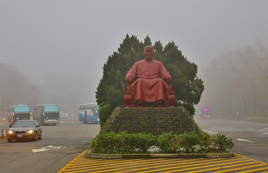
そう。ここは蒋介石の彫像公園なのだ。
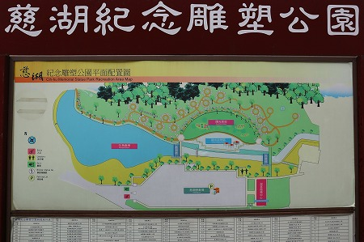
ここは蒋介石の遺体が置かれている場所でもある。
日中戦争後の共産党と国民党の争いに敗れて首都南京から日本軍と入れ替わるように台湾に国民党軍を引き連れてやってきた人。
ある意味、現代の台湾の基を作った人といえよう。
現代台湾の建国の父でもあり、独裁者。そんな具合に評価が分かれる人物だ。
ちなみに（私は見なかったが）ここ、慈湖の蒋介石の霊廟はあくまでも暫定的な廟とされている。
本来であれば首都の南京に埋葬されるべきだが、本土に帰れないので仕方なくここに置いてあるんだよ、というスタンス。
なので地下には埋葬せず、地上の棺に眠っているのだそうな。
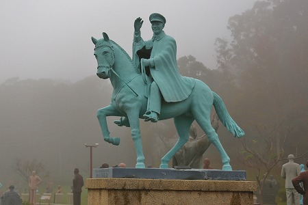
そんな蒋介石の霊廟に隣接しているのが、今回の本題、慈湖紀念雕塑公園なのだ。
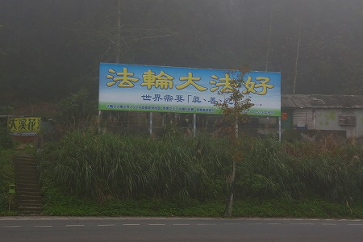
入口付近では法輪功の皆さんが大陸で迫害されていることをアピールしていた。
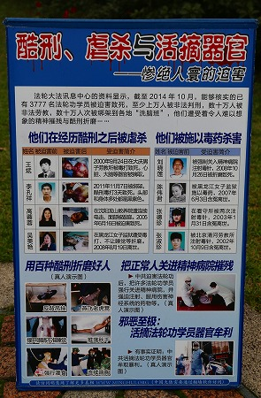
以前香港でも似たようなパネルを見たが、法輪功の人達が中国当局にこんな酷い拷問を受けた、という説明である。
いくら中共の敵とはいえ、今、ここでアピールしてもあまり効果がないような気がするんですけど、いいんですか？あ、いいんですか…。
とりあえず先に進みます。
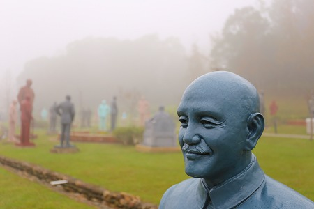
園内には無数の蒋介石の銅像が展示されている。
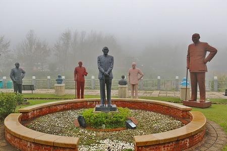
それもそのはず。
この公園に並んだ蒋介石の彫像は台湾全土から集められたものなのだ。
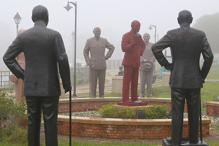
蒋介石独裁時代には市庁舎や学校などの公共施設に数多くの蒋介石の銅像が建立されたのだった。
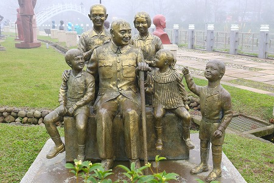
ところが1980年代の民主化以降、蒋介石の銅像は時代に合わないし、チョット邪魔になってきちゃったのね。
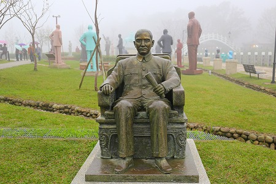
で、庁舎や学校の建て替えのタイミングで時流に合わない蒋介石の銅像が廃棄されたり、お蔵入りされたり。
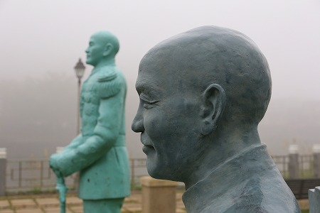
そんな棄てられかけていた銅像を蒋介石を信奉する団体が一か所に集めたのがこの公園なのだ。
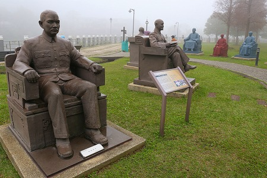
まあ、ある意味蒋介石信仰の総本山ともいえる「聖地」ですな。
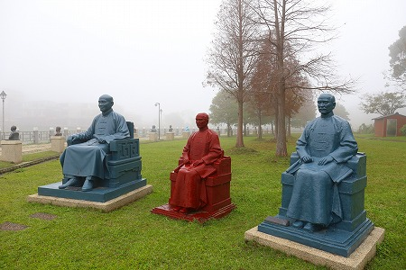
現在百数十体の像があるといわれるが、今後増々増えていく予定だとか。
敷地は充分ありそうだが、それ以上に台湾全土から蒋介石の像が殺到したら大変なことになりそう…。
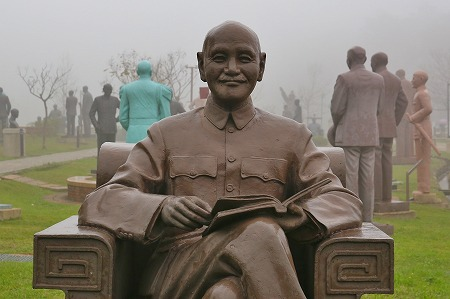
この日は深い霧が立ち込めていて、雰囲気は満点。
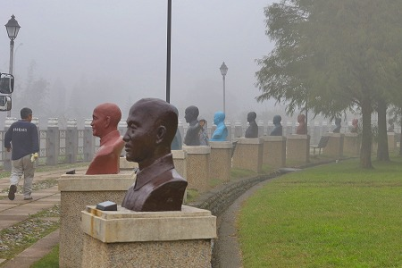
蒋介石の胸像が延々と並んでいるが、先の方は霧に煙ってよく見えない…。
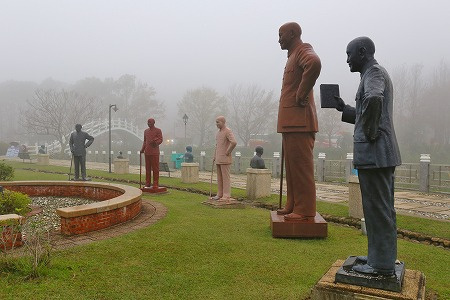
蒋介石の銅像は肖像画から造ったのだろうか、同じポーズの像がまとめて置かれていた。
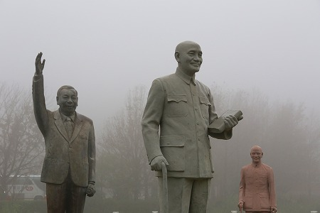
一体だけ違う人が手を挙げていた。
蒋介石の息子、蒋経国だ。
彼もまたこの地に「仮安置」されているのだ。
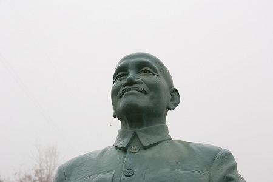
私は近現代台湾史に詳しくないので、蒋介石という人物の客観的な評価を出来る立場ではない事を先に断っておくが、少なくとも愛嬌のある顔からは好々爺という印象しか持てない。
いや、独裁者であるという側面があるのは知ってますよ。
それでもやはりこの銅像群からは人懐っこいおじさんという印象しか持てないんだなあ。
なんか桂枝雀師匠にも似てるし。
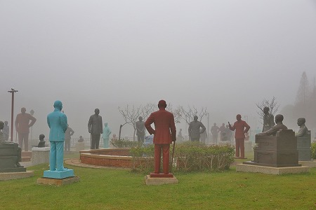
霧の中に佇む大量の銅像。一人の蒋介石が演説をしている。
でもそれを聞いているのは全部蒋介石。
ある意味凄くアイロニカルな光景である。
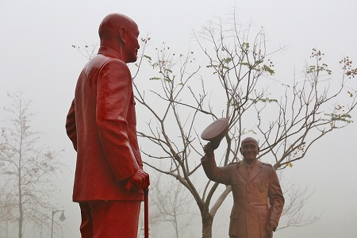
蒋介石に挨拶する蒋介石。
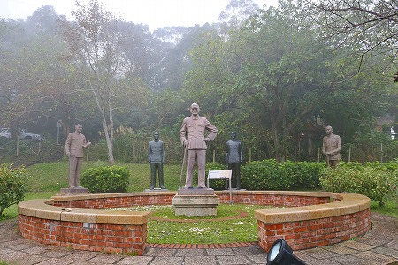
蒋介石を囲む蒋介石。
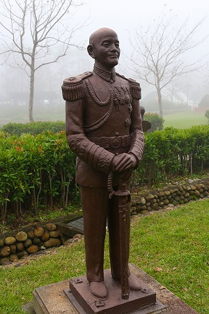
軍装の蒋介石。
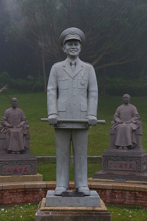
制服、後ろには民族服の蒋介石。
これらの蒋介石像にはすべて建造年とその像があった場所が記されている。
例えば「民国〇〇年、〇〇県〇〇大学」といった具合。
あ、民国というのは台湾の年号です。
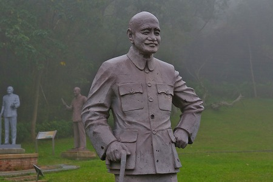
勿論、今でも公立の施設では蒋介石の像をちらほら見かけるが、台湾全土にコレほどあったんだ～、と妙に感心してしまった。
そしてここにある蒋介石は多少の温度差はあれど少なくとも実社会で必要とされなくなってしまったもの。
それはつまり国父とか中正とかいう属性を剝奪された、いわば英雄の抜け殻のようなものなのだ（一旦棄てられているわけだしね）。
それらの記憶の出がらしを紡いで夢の王国を再構築するこの公園自体が強烈な魔法にかかったおとぎの国なのかもしれない。
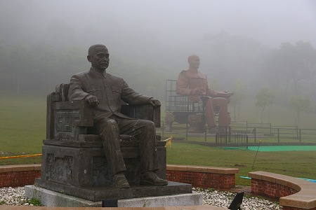
そんな公園の端っこに巨大な座像が見えてきた。
冗談かと思うほど巨大な蒋介石像である。
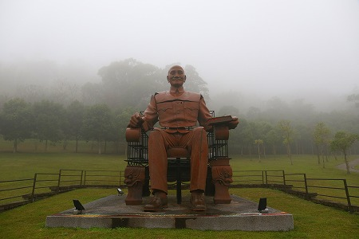
この座像は高雄市にあったもので、要らなくなったので倉庫に突っ込まれていたモノを修復したのだとか。
従ってパーツが幾つか無くなっているのだが、そこを鉄骨フレームなどを用いてガッツで復元している。
作りかけのロボットみたいだが、ここまでして蒋介石を復元しよう、という人達の意思の強さは凄まじいっすね。
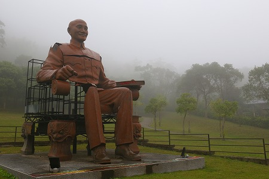
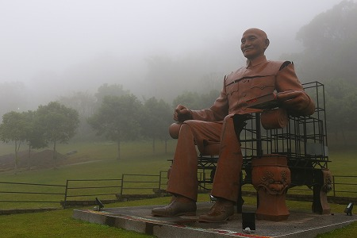
折角なので左右アングルからご堪能ください。
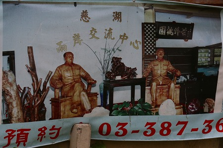
公園の一画にはレストランがあった。
毛沢東と蒋介石が並んだ写真があり、見てみたかったが休業中だった。
何だかどんどん霧が深くなってきたのでこの辺で退散します。
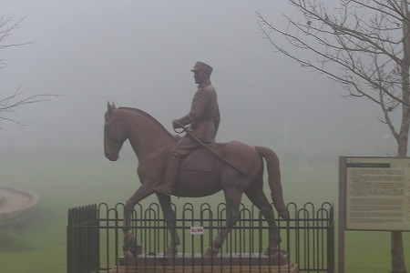
最後に馬に乗った蒋介石像を見て帰路に就いた。
濃霧に覆われた公園を改めて眺めてみると、何もかもが現実味のない場所に思えた。
それは現在の台湾社会では邪険にされている英雄の亡霊が祀られているからなのかもしれない。
と、言う訳で台湾大佛列伝5、これにてお開きにさせていただきますよ。
台湾大佛列伝5に戻る
珍寺大道場 HOME